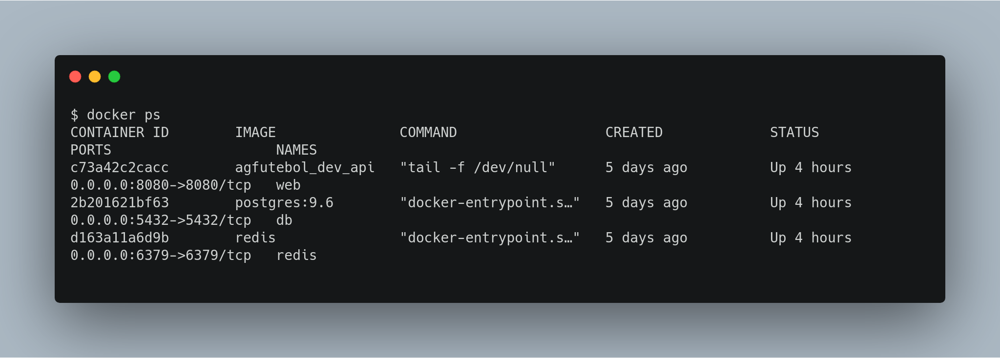
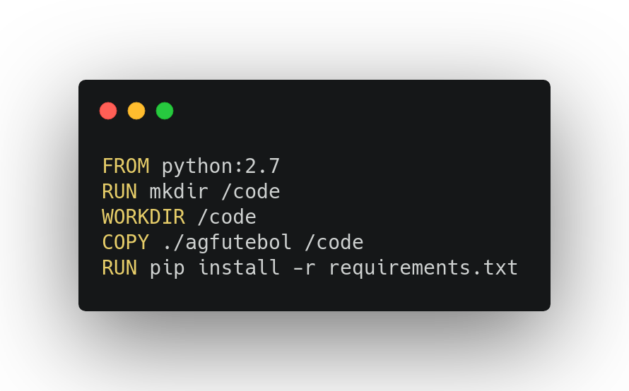
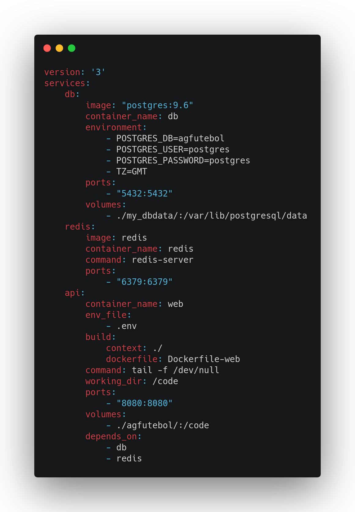
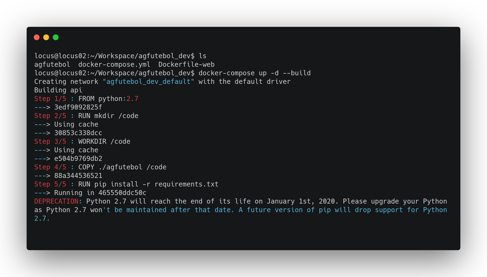

Docker
Vocês conhecem a iniciativa Docker ?

O que é Docker ?
Docker é uma plataforma de código aberto desenvolvida em Go, que garante maior facilidade na criação e administração de ambientes isolados
VM x Container

Container
Virtualiza um sistema operacional
Vantagens
- Criação de ambientes de forma rápida e fácil
- Bom desempenho
- Fácil gerenciamento de recursos
Dockerfile & Docker-compose


Dockerfile
Dockerfile
RedisDocker-compose
Executando Docker-compose
Comandos legais
- Listar ativos: docker ps
- Listar inativos: docker ps -a
- Desativar container: docker stop id_container
- Excluir container: docker rm id_container
- Entrar no container: docker exec -it id_container bash
Comandos legais
- Buildar e ativar: docker-compose up -d --build
- Ativar: docker-compose up -d
- Parar e excluir: docker-compose down
Links legais
Proxima etapa
Vocês conhecem a iniciativa Jenkins?